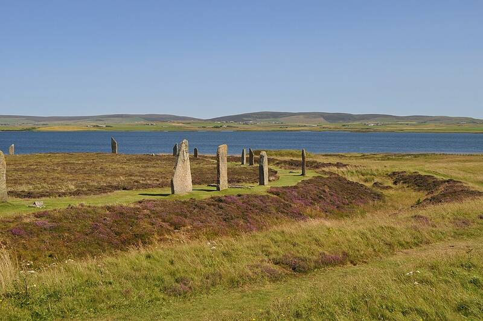

Ring of Brodgar
Orkney, Scotland

A henge and stone circle 104 metres across, the third largest in the British Isles, thought to have been raised between 2500 and 2000 BC. It originally had up to 60 stones. It is part of the Heart of Neolithic Orkney World Heritage Site. 1
Open in the interactive Watcher
Sources
- Ring of Brodgar Wikipedia